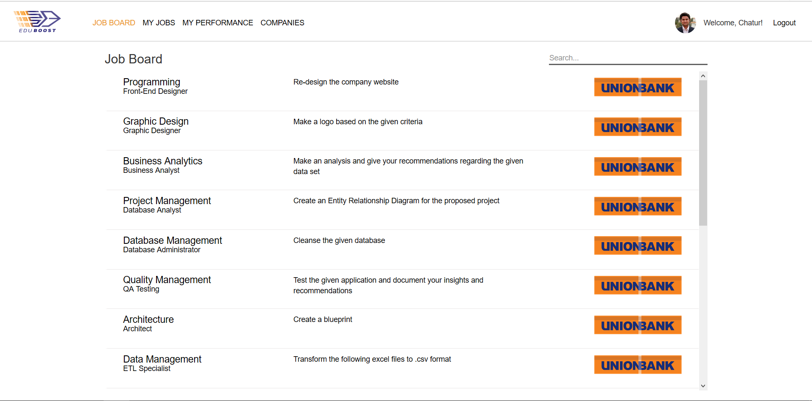
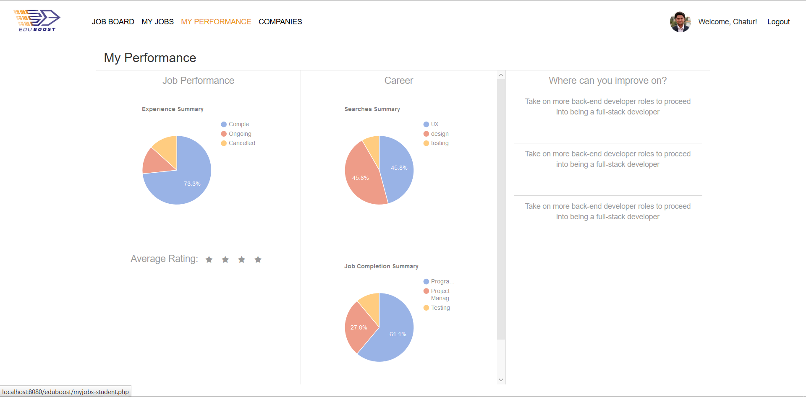
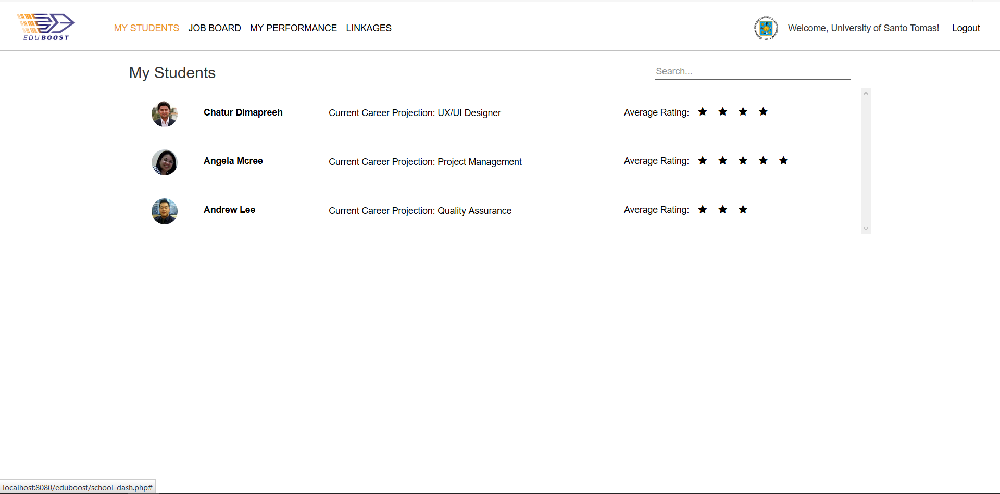
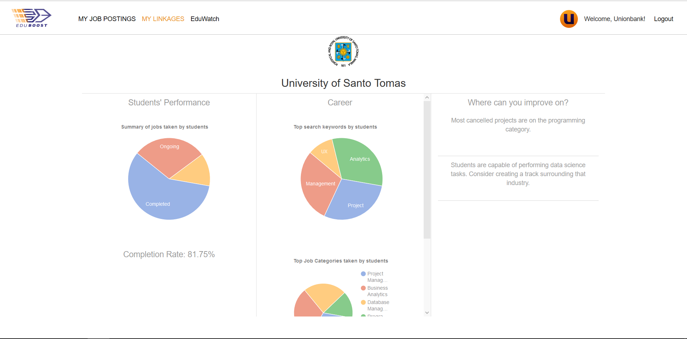

Eduboost is a web platform focusing on giving students the capability to garner work experience even before they graduate. This was our team's entry for the Unionbank hackathon; U:Hac, which happened last August 28, 2016.
Eduboost for Students

Students can take up jobs or projects provided by companies from their respective industries and earn experience as they earn money.

Analytics algorithms are used in the system which tracks the student's performance, job searches, and project trends to provide a career projection for each student.
Eduboost for Universities

Eduboost allows a university to track its students' performance within eduboost. Career projections are also displayed to allow decision makers to act upon these information.

Analytics algorithms for student data are also provided for universities, allowing them to obtain insight on where their students are inclined to.
For businesses, eduboost allows them to search for potential interns and employees. The platform also provides them with insight on what field students from specific universities are inclined to.